NPC animation & personality
Latest King placement correction: revised clip · before · after. The original 55-second recording below predates this correction.
The King, Skill Teacher, and all three Princess appearances now have native pixel-art idle poses, greeting gestures and brief reward reactions. These captures use isolated adventures in the local build.
55 seconds. Each section shows world animation, conversation, then a reward reaction. The clip contains game-rendered frames sampled at 8 frames/second; it has no audio track.
King at the castle
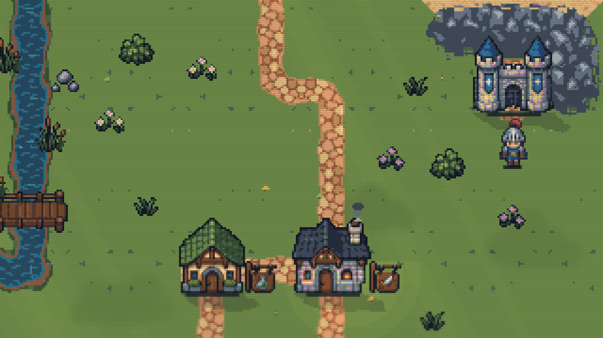
Before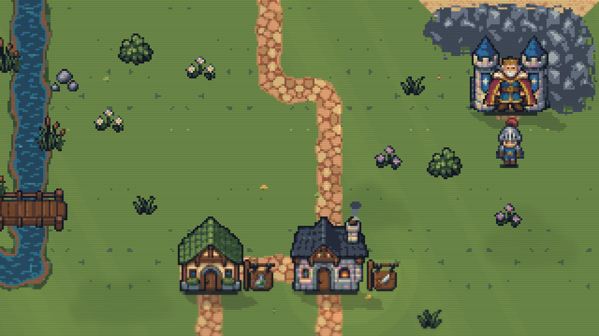
After: grounded King with restrained idle and greeting poses.
Skill Teacher
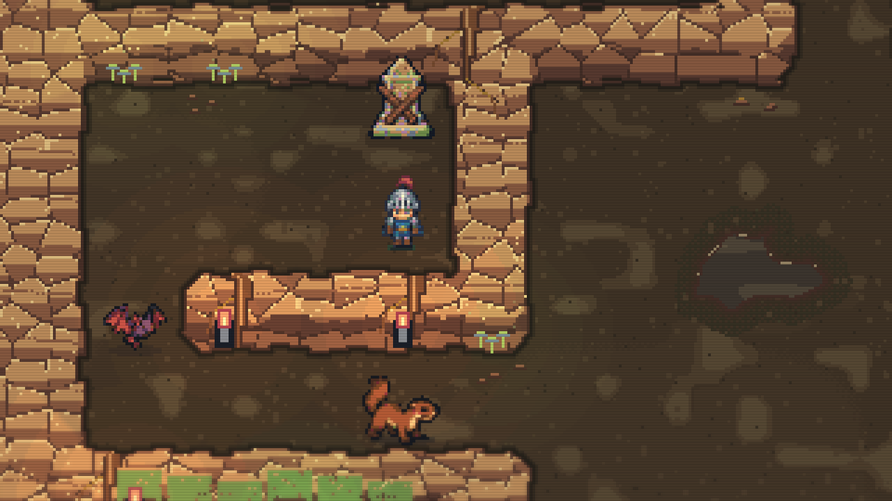
Before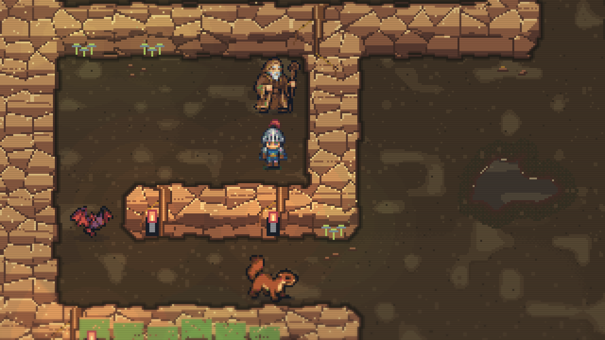
After: staff-supported teacher at the original training location.
Princess rescue
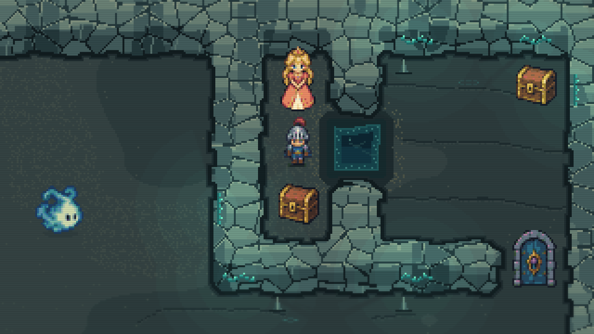
BeforeAfter: matching identity, stable feet, soft contact shadow.
Room for the conversation
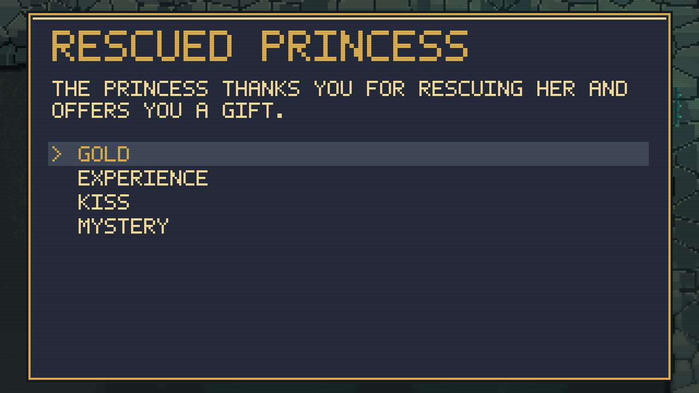
Before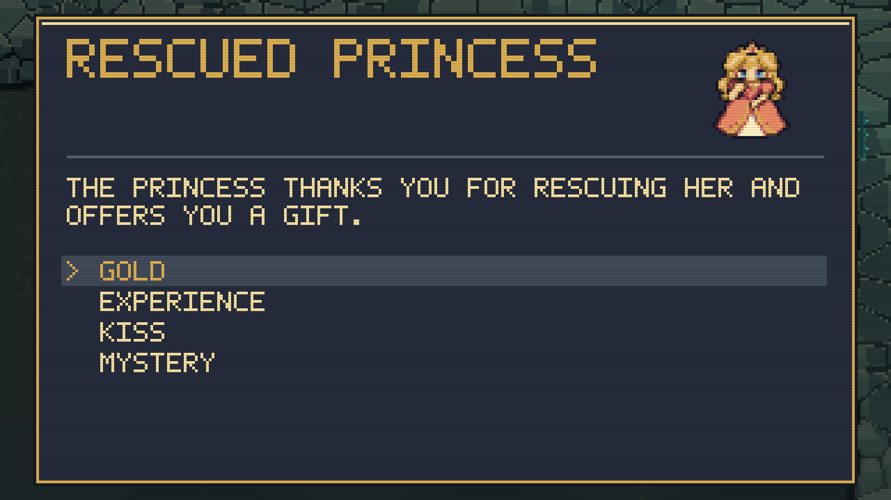
After: animated portrait header, original wording and choices.
Brief, distinct reactions
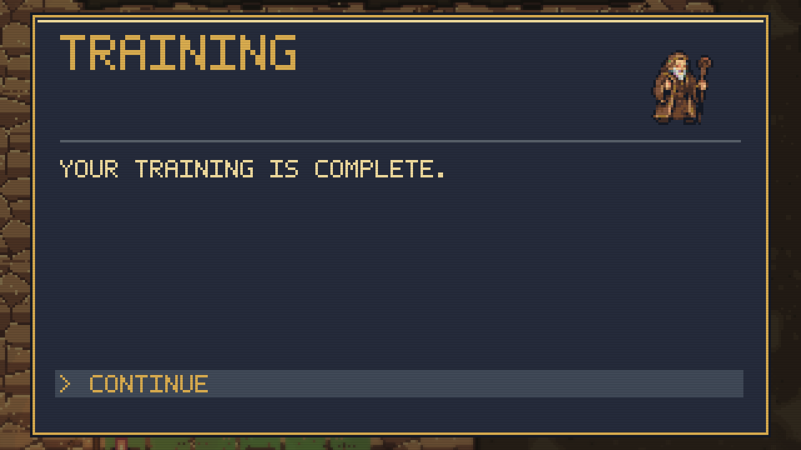
Successful training gets a nod of approval.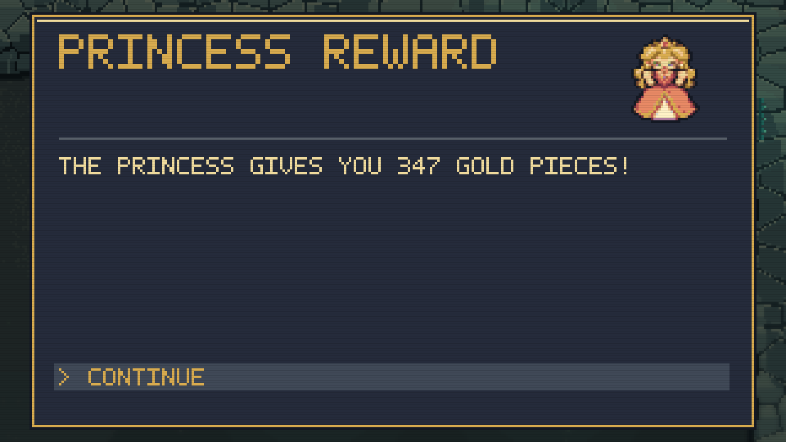
Rescue celebrations play once and settle back to idle.
All three Princess appearances
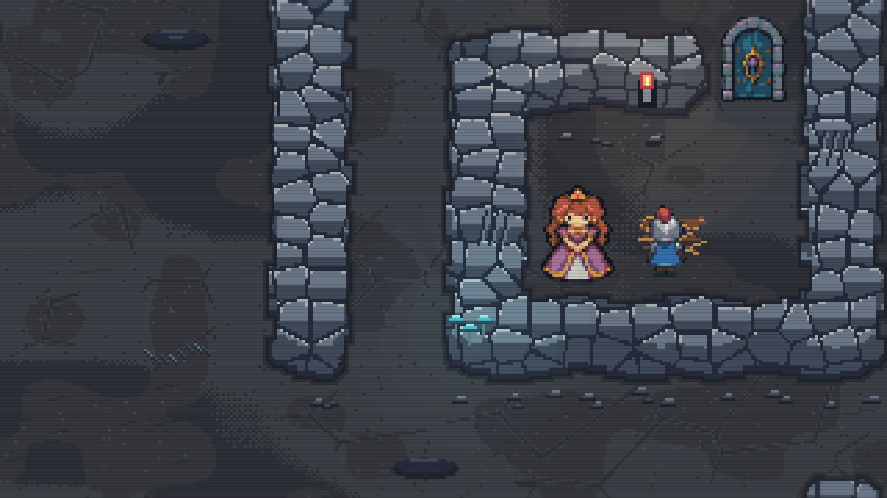
Auburn hair and purple gown.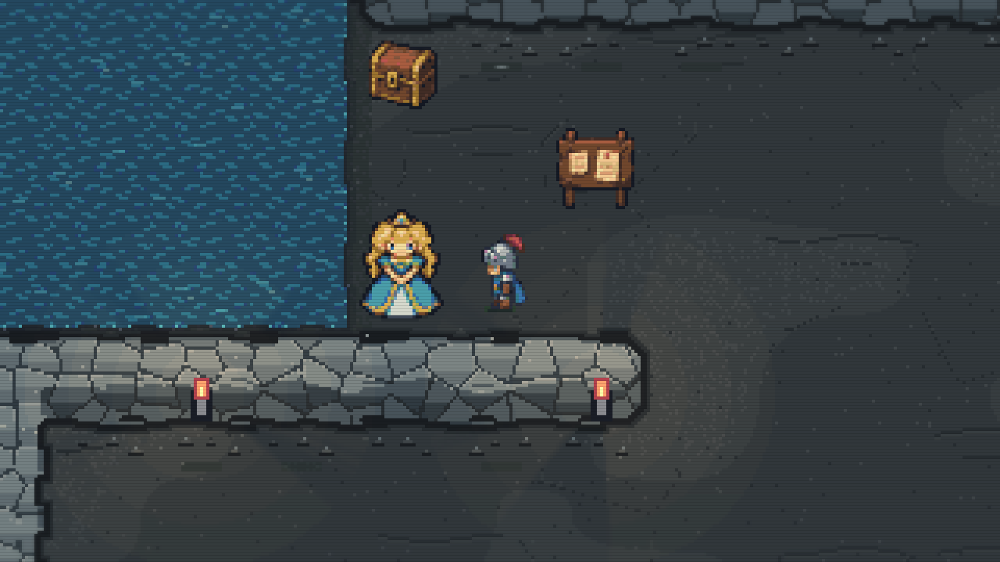
Blonde hair and blue gown.
New pose sheets were created with the built-in imagegen tool and compiled through the game's fixed palette, binary transparency and native 48-pixel cells. Generation prompts and original source paths · King sheet correction · Installed assets and implementation notes · Verification record.
Gameplay rules, dialogue, choices, prices and quest rewards are unchanged. Personal saves are excluded from the captures. This pass has not been repackaged; visual approval remains yours.